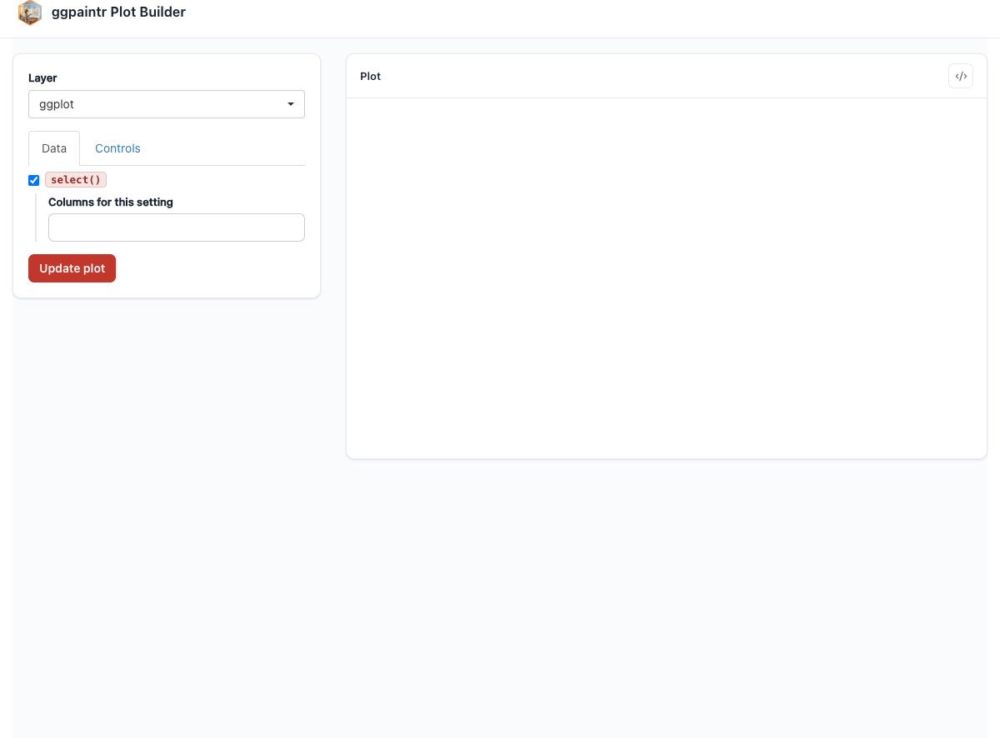
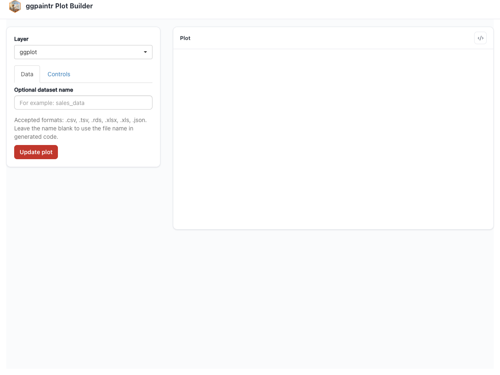

ppPercent <- ptr_define_placeholder_value(
keyword = "ppPercent",
build_ui = function(node, label = NULL, selected = NULL,
named_args = list(), ...) {
step <- named_args$step %||% 1
shiny::sliderInput(
node$id, label = label %||% "Percent",
min = 0, max = 100,
value = selected, # the framework routes ppPercent(40) in here
step = step
)
},
resolve_expr = function(value, node, ...) {
if (is.null(value)) return(NULL)
as.numeric(value) / 100
},
validate_session_input = function(value, ctx) {
v <- suppressWarnings(as.numeric(value))
if (length(v) != 1L || is.na(v) || v < 0 || v > 100) {
return("Percent must be a single number between 0 and 100.")
}
TRUE
},
parse_positional_arg = ptr_arg_numeric(),
parse_named_args = list(step = ptr_arg_numeric()),
embellish_eval = function(x, ...) as.numeric(x) / 100,
ui_text_defaults = list(label = "Percent for {param}")
)
ptr_app(
ggplot(mtcars, aes(x = ppVar("wt"), y = ppVar("mpg"))) +
geom_point(alpha = ppPercent(40, step = 5))
)13 Custom Placeholders
The five built-ins are themselves registered through the same public API you are about to use. You define a placeholder by calling one of three constructors, keyed by the role from Chapter 3:
ptr_define_placeholder_value()— produces a self-contained value;ptr_define_placeholder_consumer()— needs the upstream data’s column names;ptr_define_placeholder_source()— produces the data frame the rest of the formula reads.
All three are thin wrappers over a shared core, so they take an overlapping set of arguments. This chapter covers the value constructor in full, then only what is different for consumer and source. A few facts hold for all three:
- The registry is process-global. Calling a constructor registers the keyword as a side effect (and returns a plain-R function — see
embellish_evalbelow); there is noplaceholders =argument to thread anywhere. Register once near the top of your script, then use the keyword in any formula. - The keyword you register is the keyword you write in the formula. By convention built-ins use the
ppprefix, but yours need not.
13.1 A value placeholder — every argument
A custom ppPercent: a 0–100 slider whose value is divided by 100 before it reaches the plot. It exercises every argument of ptr_define_placeholder_value(); the positional 40 in the app seeds the slider, the named step = 5 is forwarded to build_ui:

ppPercent rendering as a 0–100 slider; the generated code shows alpha = 0.4.13.1.1 keyword
The name to register and to write in formulas. Required.
13.1.2 build_ui — and why its signature looks the way it does
build_ui returns the Shiny control. Its first argument is node (required) — carrying, among other things, node$id (the input id you must give your widget) and node$default (the literal positional default from the formula, or NULL — exposed for the framework’s own bookkeeping; never read it inside the hook, as explained next).
The framework does not call build_ui(node) bare. It calls it through an injector that also passes label (the resolved copy from ui_text_defaults, possibly overridden by the app’s ui_text), selected (the persisted value, injected only if your function can receive it), and named_args (the validated named arguments from the formula call). Hence the canonical signature function(node, label = NULL, selected = NULL, named_args = list(), ...):
- You opt in to an injected argument by naming it — or by having
.... If you neither nameselectednor accept..., it is never injected. Naming the ones you use and keeping...to swallow the rest is the safe, forward-compatible shape. - Seed the widget from
selected— and onlyselected. The framework owns the precedence: on the first render it routes the formula’s positional default (ppPercent(40)) intoselected; on every later renderselectedis the live input, verbatim. Never readnode$defaultyourself and never hardcode a fallback for the empty case — both bypass the seeding layer and snap a user-cleared widget back to the default on the next re-render. Whenselectedis empty (NULL,character(0),"",NA), render the widget empty; boot defaults belong in the formula. - Use
node$id— and onlynode$id— as the widget id. Do not namespace it yourself; the framework already did.
13.1.3 resolve_expr
function(value, node, ...) → the value (or expression) spliced back into the formula. Return NULL to contribute nothing (an empty field), which drops the argument cleanly (Chapter 4). Here we divide by 100 so the plot sees a 0–1 alpha.
13.1.4 validate_session_input
Optional. function(value, ctx), run before resolve_expr. Return TRUE or NULL to accept; return a single character string to reject — it surfaces as the inline error message (rlang::abort() also rejects). Any other return value fails closed with a generic “validation failed” — so returning the value itself, a natural-looking mistake, rejects every draw. For mid-typing artifacts that should not flash an error, signal ptr_signal_partial() instead of aborting — it is caught on the live keystroke path but not on the draw path. (ctx earns its keep for consumers, below.)
13.1.5 parse_positional_arg
Declares whether the placeholder accepts a positional default in the formula, and validates it. Pass one of the argument validators — ptr_arg_string(), ptr_arg_numeric(), ptr_arg_symbol(), ptr_arg_symbol_or_string(), ptr_arg_expression(). Each inspects the default as unevaluated code (the symbol, string, and expression validators never eval(); ptr_arg_numeric() first walks the AST against an allowlist, then constant-folds it in a sealed environment), so ppPercent(40) is validated to be a numeric literal at translate time. The element factories take vector = TRUE to accept a c(...) of elements — ptr_arg_numeric(vector = TRUE, length = 2), ptr_arg_symbol(vector = TRUE) for a multi-column default like c(mpg, hp). Leaving it NULL (the default) rejects any positional argument.
13.1.6 parse_named_args
A fully-named list mapping extra named-argument names to validators, same family as above. It lets the formula write ppPercent(40, step = 5); validated values arrive in build_ui as named_args. The name shared is reserved (it is the cross-widget binding key, Chapter 8) and may not appear here.
13.1.7 embellish_eval
The plain-R meaning of the keyword outside ptr_app(). A placeholder-embellished formula must stay valid plain R that still renders the original plot with no app running; embellish_eval supplies that meaning. Each constructor returns this function, so bind it under the keyword name — ppPercent <- ptr_define_placeholder_value("ppPercent", ...), after which ppPercent(40) is 0.4 as ordinary R. The meaning is author-controlled, never derived. If omitted, value and consumer keywords default to embellish_identity() (a transparent no-op wrapper); embellish_symbol_to_string() covers the column-selecting consumer case (it returns the referenced column names as strings, so a naked tidyselect formula still works).
13.1.8 ui_text_defaults
A named list of copy defaults over label, help, placeholder, and empty_text, with {param} interpolated to the argument name. These are the defaults; an app overrides them through ui_text = (Chapter 15).
13.2 A consumer placeholder — the delta
Everything above applies; two things change.
build_ui gains two arguments: cols and data. The injector fills cols with the column names of the data flowing into this point of the pipeline and data with that frame, re-running build_ui whenever the upstream changes:
colvars <- ptr_define_placeholder_consumer(
keyword = "colvars",
build_ui = function(node, cols = character(), data = NULL,
label = NULL, selected = character(0), ...) {
shiny::selectInput(
node$id, label = label %||% "Columns",
choices = cols,
selected = intersect(selected, cols), # keep only still-valid picks
multiple = TRUE
)
},
resolve_expr = function(value, node, ...) {
if (length(value) == 0L) return(NULL)
rlang::call2("c", !!!as.list(value)) # c(col1, col2, ...)
},
parse_positional_arg = ptr_arg_symbol_or_string(),
ui_text_defaults = list(label = "Columns for {param}")
)
ptr_app(
mtcars |>
dplyr::select(colvars) |>
ggplot(aes(x = ppVar, y = ppVar)) + geom_point()
)
colvars as a multi-column picker inside a dplyr::select() pipeline stage; the downstream ppVar pickers re-resolve against whatever it selects.validate_session_input’s ctx is now useful. ctx$data holds the upstream data frame, so a validator can do data-aware checks — reject a non-numeric column, range-check chosen values, and so on. (The gallery’s ppVars uses ctx$upstream_cols the same way: Chapter 6.)
13.3 A source placeholder — the delta
A source produces the data, so it sits at the head of a pipeline. Three things differ:
resolve_datareplacesresolve_expras the required producer:function(value, node, ...)must return a data frame.resolve_exprbecomes optional, defaulting to the symbol that names the produced frame in generated code — override it only for different generated code. The two can disagree on purpose: showread.csv("...")in the code while reading uploaded bytes at runtime.embellish_evaldefaults to an abort guard, not identity — a source has no sensible plain-R meaning until you give it one.shortcut = TRUEadds a framework-owned companion text box (atnode$shortcut_id) into which the user types the name of a data frame to load — the “or type a dataset name” box you saw onppUpload. The framework owns the box and the lookup: it resolves the typed name itself, viaget(name, envir, inherits = TRUE)against theenvirpassed toptr_app()/ptr_server(). Because the framework owns that box, yourbuild_uimust render onlynode$id— or nothing at all.
This ppDataset lets the user type the name of any data frame in scope. There is less to write than you might expect, because the shortcut machinery is not yours to reimplement: the typed name flows into resolve_expr as value (the default rlang::sym(value) already splices it into the generated code as a bare symbol), while resolve_data — still required, as the role’s producer — receives the primary widget’s value, input[[node$id]], never the typed name (that reaches your hooks through node if you need it). With no primary widget that value is always NULL, so a no-op hook returning NULL (“no data yet”) is the whole job:
ptr_define_placeholder_source(
keyword = "ppDataset",
shortcut = TRUE,
build_ui = function(node, label = NULL, ...) {
# Shortcut-only source: the framework's text box is the sole entry
# point, so build_ui contributes no widget of its own.
NULL
},
resolve_data = function(value, node, ...) {
# `value` is the primary widget's value -- always NULL here, since
# build_ui renders nothing. The shortcut lookup is the framework's.
NULL
},
ui_text_defaults = list(label = "Dataset for {param}")
)
ptr_app(
ppDataset() |> ggplot(aes(x = ppVar("mpg"))) + geom_histogram()
)
ppDataset() at the pipeline head: type mtcars into the framework’s text box and the downstream pickers light up.A source that owns a real widget (a selectInput of dataset names, say) is the same shape with shortcut = FALSE and a build_ui that renders the picker at node$id — there resolve_data does the real work, turning input[[node$id]] into the frame (the example in ?ptr_define_placeholder_source is exactly this shape).
13.4 Common pitfalls
- Forgetting
inputId = node$id. The widget renders, the user types, nothing happens — the value never reachesresolve_expr. - Returning a string when you wanted a symbol.
resolve_expr = function(value, ...) valuefor a column picker splices"cyl"(a string literal), sogeom_point(color = "cyl")paints a constant color. Wrap withrlang::sym(value). - Forgetting empty input. Shiny calls your hooks before the user touches anything. Treat
NULL,character(0),NA, and empty strings as “no value yet” andreturn(NULL)— the framework prunes the argument. - Confusing
resolve_exprwithresolve_data. For sources:resolve_dataproduces the actual frame;resolve_exprproduces the text in the rendered call. - Dropping
...from a hook signature. Future framework versions may inject new named arguments; without...the call fails. - Re-registering inside a reactive. The registry is process-global; register once at script top level, before
ptr_app().
13.5 Unregistering
ptr_clear_placeholder("ppPercent") removes one user-registered keyword; ptr_clear_placeholder() removes them all. Seven keywords are protected (clearing one errors): the five built-in placeholders plus the structural ppLayerOff / ppVerbSwitch. Re-registering an existing keyword overwrites the previous entry with a notice — no need to clear first.